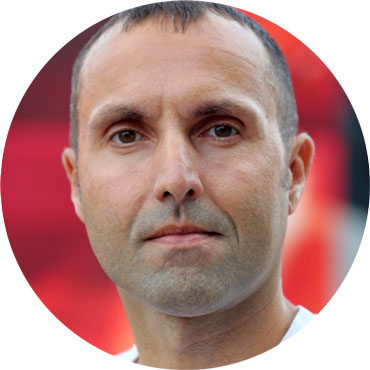

Возможно, лучший беговой клуб Москвы
-
Научный подход к тренировкам
-
Строгий медицинский контроль
-
Гарантированный рост результатов
-
Профессиональный журнал о беге

Александр Головин,
главный тренер:
Я родился и вырос в городе, где не было ни одного тренера
по марафонскому бегу. С одной стороны, мне не повезло — порой приходилось, что называется, изобретать велосипед.
С другой стороны, это заставило глубоко изучать физиологические аспекты тренировочного процесса, много экспериментировать (зачастую во вред своему же здоровью)
и, в конечном итоге, выработать систему, эффективность которой порой удивляла меня самого.
...
Мы заботимся
о здоровьи наших участников:
Напоминаем, что 20 июня состоится первая лекция
«Готов ли ваш организм к дистанции 42,2 км?» в рамках цикла «Биохимия марафонского бега», организатором которого является беговой клуб Running Expert
в партнерстве с Лаборатория KDL.
Главный тренер клуба Alexander Golovin и специалисты лаборатории ответят на вопросы, которые волнуют каждого любителя бега:
Узнать больше
«Готов ли ваш организм к дистанции 42,2 км?» в рамках цикла «Биохимия марафонского бега», организатором которого является беговой клуб Running Expert
в партнерстве с Лаборатория KDL.
Главный тренер клуба Alexander Golovin и специалисты лаборатории ответят на вопросы, которые волнуют каждого любителя бега:
- какое именно обследование состояния здоровья требуется марафонцу;
- какие проблемы со здоровьем чаще всего встречаются у бегунов-любителей
Участники Running Expert
Журнал
Тренерская мысль
Где пределы наших возможностей? Цикл лекций «Биохимия марафонского бега»
Правила бега
Готов ли ваш организм к дистанции 42,2 км?
В здоровом теле
Как наметить путь к рекордам
Непростые вещи
Немного полезной информации для бегунов
Непростые вещи
Немного полезной информации для бегунов
Азбука бегуна
Volkswagen Prague Marathon-2016 by RunCzech